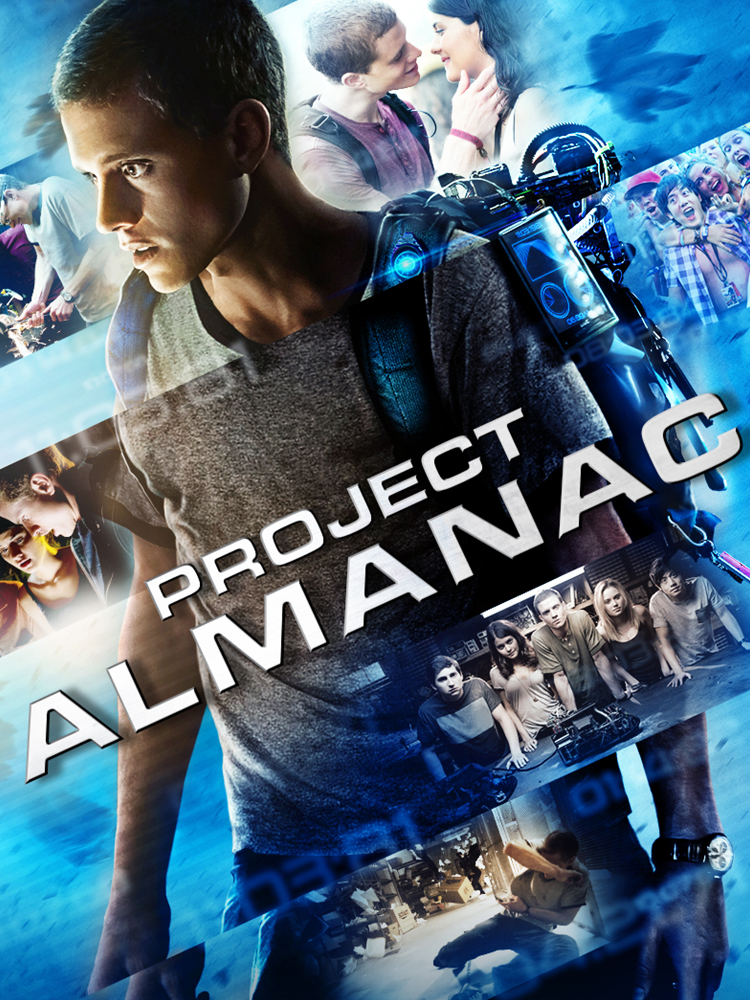
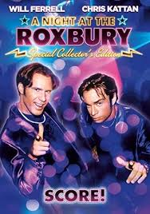

Es una de mis peliculas favoritas porque en su momento la vi con un primo y mi hermano , me gusta tambien por sus viajes en el tiempo.
Es una pelicula entretenida por como los protagonistas son como medio bobos pero saben del negocio de los bares y siempre cuenta uno con el otro.

Es una pelicula muy buena, para poder entenderla tienes que ver el
anime de slam dunk, ya que la pelicula es una continuacion,
trata de
baloncesto de un equipo de una escuela que no era buena pero con
esfuerzo, confianza y compromiso, llegaron hasta el campeonato
nacional.